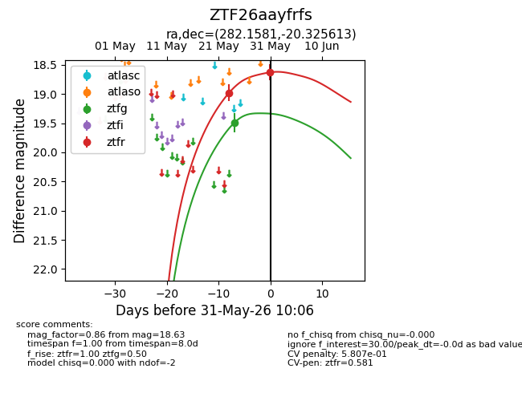
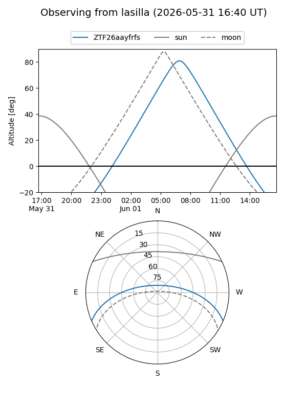
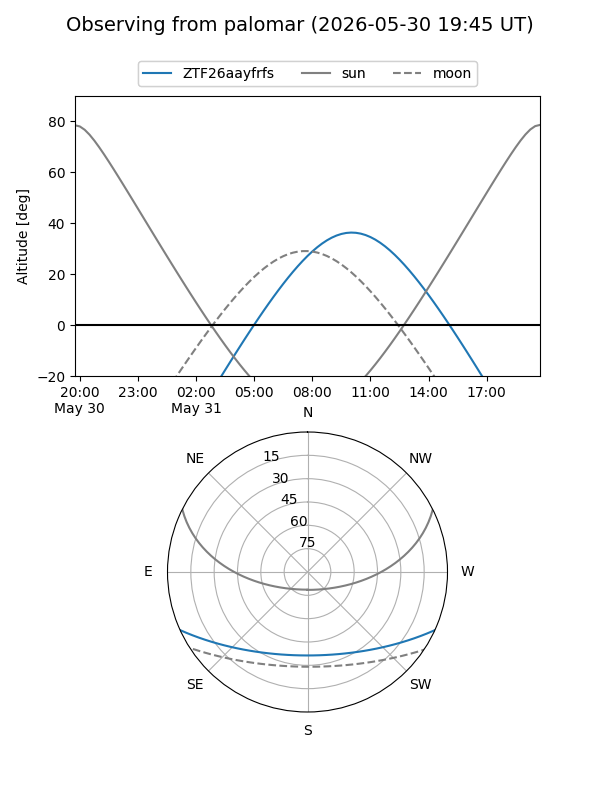
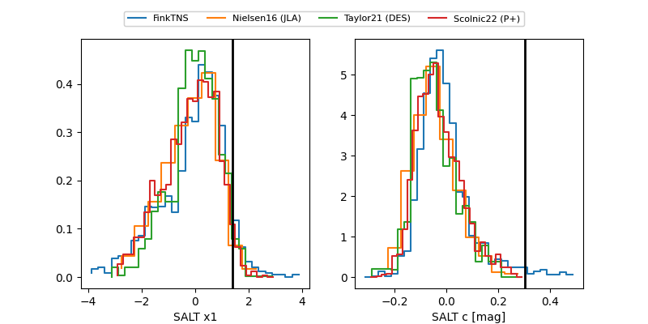

ZTF26aayfrfs
Target ZTF26aayfrfs at 2026-05-31 10:08
Aliases and brokers:
lsst-FINK: link
lsst-Lasair: link
lsst-ALeRCE: link
ztf-FINK: link
ztf-Lasair: link
ztf-ALeRCE: link
alt names
ZTF26aayfrfs (ztf,fink_ztf)
Coordinates:
equatorial (ra, dec) = 282.1581,-20.32561
equatorial (HMS+DMS) = 18:48:37.94,-20:19:32.21
galactic (l, b) = (14.3969,-8.52100)
Flags:
likely cv: !
Photometry:
last ztfg=19.50, ztfr=18.63
1 ztfg, 2 ztfr detections
Lightcurve

Visibility


Additional plots
